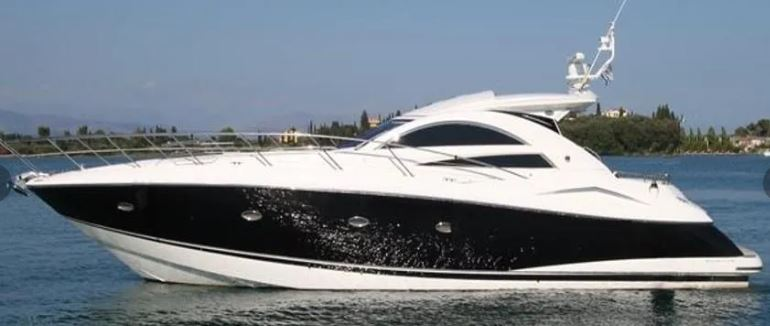
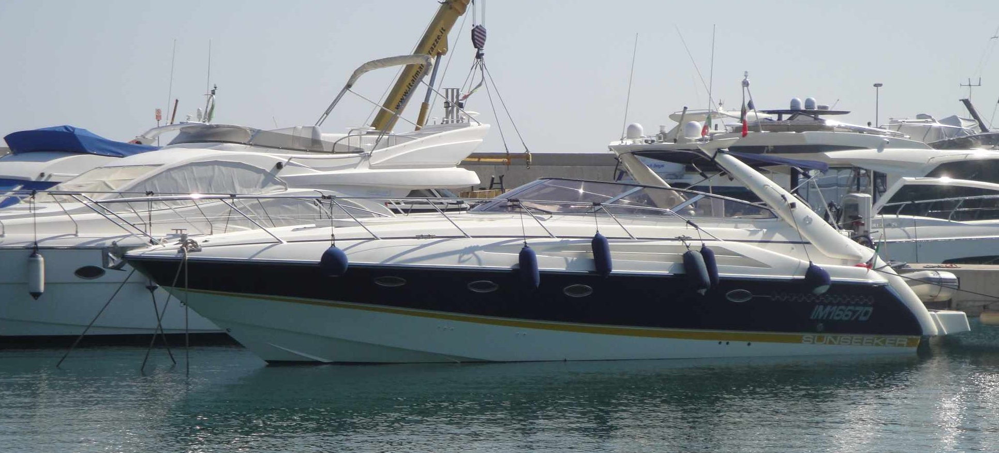
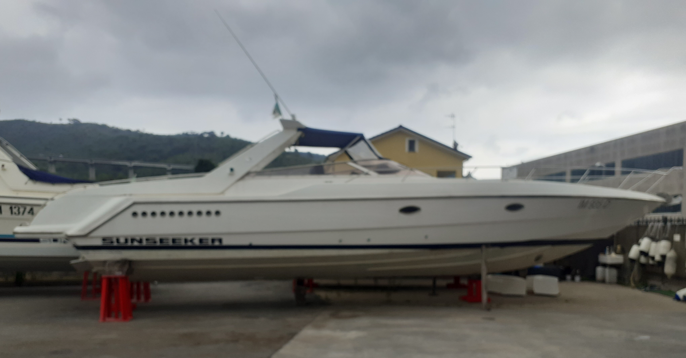

Manutenzione specializzata, rimessaggio e assistenza tecnica per imbarcazioni prestigiose. Un servizio prima classe, su misura per voi.
La Ditta Alfonso Garavaglia nasce nel 1978 ad Andora, sulla Riviera Ligure di Ponente. Dalle origini nel settore automobilistico, la passione per il mare ci ha portato a specializzarci nella manutenzione e riparazione di imbarcazioni a motore.
Dal 1991 siamo il punto di riferimento per i proprietari di yacht prestigiosi come Sunseeker, Fairline, Abbate e Pirelli. Il nostro impegno? Rendere ogni uscita in mare un'esperienza sicura, affidabile e senza pensieri.
Un servizio completo e professionale per ogni tipo di imbarcazione, dalla manutenzione ordinaria agli interventi specializzati.
Interventi meccanici di qualsiasi genere su motori marini. Diagnosi avanzata e riparazione con ricambi originali per garantire massime prestazioni.
Dotazioni, attrezzature e accessori per la tua imbarcazione. Fornitura e installazione di strumentazione di bordo, elettronica e sicurezza.
Trattamenti antivegetativi, lucidatura, osmosi e interventi sullo scafo. La tua carena sempre in condizioni perfette per navigare.
Verifiche funzionali complete, prove in mare e supporto tecnico dedicato. Ogni dettaglio sotto controllo prima di prendere il largo.
Custodia in capannone coperto o piazzale esterno. Servizio di alaggio, varo e movimentazione con attrezzature professionali.
Supporto esperto per l'acquisto o la vendita della tua imbarcazione. Valutazioni tecniche, perizie e consulenza personalizzata.
Una selezione curata di imbarcazioni usate, tutte verificate e garantite dal nostro cantiere. Qualità certificata.

In Evidenza
Disponibile
SportivaContattaci per un preventivo gratuito o per qualsiasi informazione sui nostri servizi.